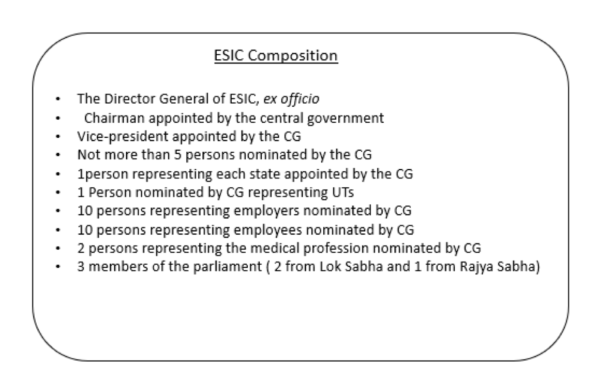

Employee State Insurance Act (ESI) is established in 1948 and it is a health insurance for Indian workers. It is an autonomous corporation by a statutory creation under Ministry of Labour & Employment, Government of India. The Corporation can setup hospitals either independently or in collaboration with state government or other private entities but most of the hospitals & dispensaries are run by the state government.
Applicability of the Act
It is applicable to all factories & other establishment where 10 or more persons & has been extended to other undertakings & newspaper establishments employing 20 or more persons. ESI shal be deducted only for those employees whose wages are less than 21000/- per month, engaged directly or through contractor.
Contribution
In ESI Employer shall submit ESI on behalf of Employee share of ESI & Company share of ESI towards their employee & the Employee share is deducted from their salary or wages. Acc. To PF Act, It is mandatory that Basic salary is minimum 55% of gross salary. Employee should contribute 1.75% on gross salary & Employer contribution is 4.75 %. Employees in receipt of a daily average wage up to Rs.137/- are exempted from payment of contribution.
Composition of ESIC
The ESIC generally consists of the following members as explained below.

There are two contribution periods each of six months duration and two corresponding benefit periods also of six months duration as under.
|
Contribution Period |
Cash Benefit Period |
|
1st April to 30th Sept. |
1st Jan of the following year to 30th June |
|
1st Oct to 31st March of the year following. |
1st July to 31st December. |
Key Features & Benefits of ESI:
There are a number of attractive features and benefits that are offered by the Employee State Insurance Corporation. Not only does it provide medical benefits but it also comes with a level of financial security in times of financial hardship like unemployment, etc. Some of these are listed below:
Other benefits that are offered with ESI are:
Hope the information will assist you in your Professional endeavors. In case of any query / information, please do not hesitate to write back to us at arushireach@gmail.com.